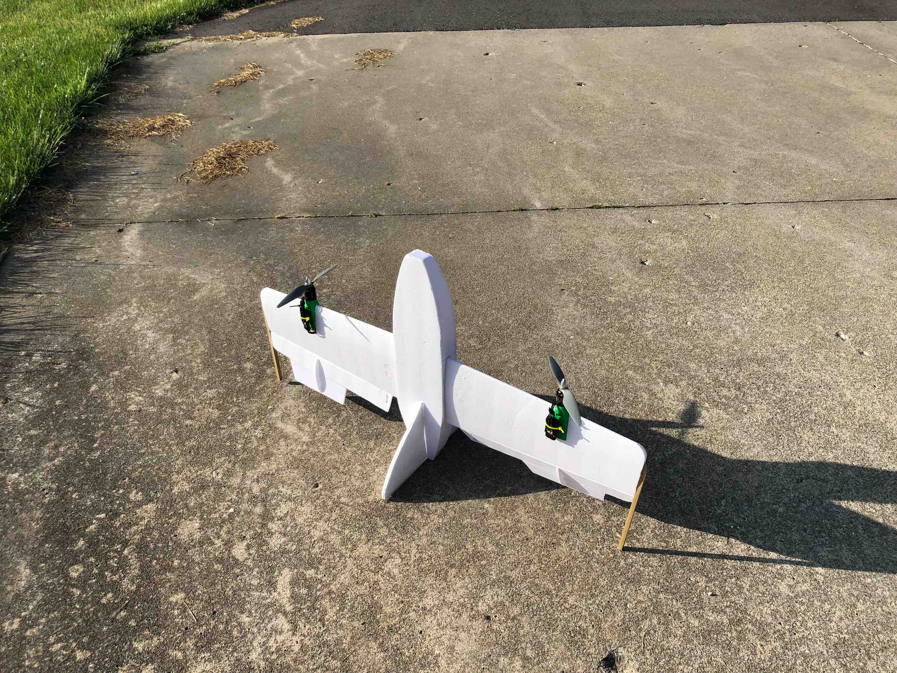

VTOL (Vertical Take Off and Landing) is, for many applications, the holy grail of UAV design. It allows long range, high endurance aircraft to take off and land in small areas as a rotorcraft do. However, VTOL aircraft are rarely utilized due to the added complexity and design challenges involved. As an exercise in learning and fun I have designed, built, and flown small VTOL UAVs.
VTOL Version 1

Design
During my gap year over 2017-2018, I created my first VTOL aircraft (shown above). I chose the odd design due to its mechanical and electrical simplicity. The need to control every degree of freedom in both forward flight and hover often leads to highly complex systems with numerous actuators. After researching previous designs, I settled on the a two-motor, elevon vectoring, tail-sitter design. This simple approach maintains control with only 2 brushless thrust motors and 2 servo motors. It used a Pixhawk 2.1 flight control board and a Here GPS unit running ArduPilot's arduplane firmware.In hover, pitch and yaw are controlled vectoring the motor thrust by the use of the two oversized elevons. When the elevons pitch down, the motor's thrust creates a moment by which the nose pitches forward. In the same way, opposite action of the elevons in a hover creates a torque which then rotates the aircraft in yaw. Thrust motor differential thust controls roll.
In forward flight, the aircraft performs much like a standard flying wing, where motor control changes the total amount of energy carried, and elevons maintian directional control.
Flight Testing
To test the effectiveness of the design, the aircraft was put through a set of flight tests after preliminary PID gain tuning.Hover Testing
This design was more stable in a hover than I expected given the control system. Hover tests showed that the aircraft quickly returned to GPS position when nuged or pulled away from the set loiter point. Take off was challenging due to an interaction between the wide landing gear and control system. This a sharp burst of power on take off was used for all future flights in order to provide sufficent airflow over the elevons to maintian control off the ground. Another challenge due to the design was descent. When descending, airflow partially reversed across the elevons causing loss of control during fast descents. Hover descents were performed slowly in the following flight tests.Transition and Forward Flight Tests
The most challenging and risky part of flight testing a VTOL design is the first transition to forward flight. Before a flight test was performed, a flight was simulated on the ground with thrust motor propellers removed in order to verify correct directional correction and transition settings. Once the control system was verified, the first transition flight test began. At an altitude sufficent to allow for an abort to hover, the flight controller was set to forward flight and the aircraft accelerated as it rotated level. Forward flight proved to be somewhat difficult to control becuase of the oversized elevons, yet was still highly sucessfull. I made many tuning flights attempting to improve controllibility, and although I made progress, I still felt a design change was needed to fully meet my goals.VTOL Version 2

During the summer of 2019, I completed my second VTOL aircraft. This design was much more advanced and
and complex than my original prototype as a conventional, triple tilt-motor design. I traded the simplicity
of the original design for an increase in efficency, usability, and controlability. Flight control was provided
by the same flight controller and firmware, with a different setup and tuning.
In hover, pitch and roll are controlled by differential motor thrust, much like a standard multirotor.
Yaw is controled by using the front two motor tilt mechanisms in opposition to create a torque. This is similar
to a tri-copter design. Aerodynamic control surfaces are not used for hover control.
In forward flight, the aircraft performs much like a conventional aircraft, where where motor control changes
the total amount of energy carried, and standard aerodynamic control surfaces maintian directional control.